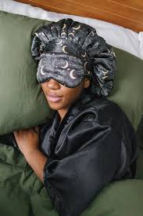

Sleep
Sleeping is very important for your overall health. You can be doing everything right, but if you don't get a good nights rest, it could affect your entire day. Here's my plan for better sleep:
- Set a strict bedtime and wake up time.
- Wear an eye mask to limit light exposure.
- Read before bed
These goals are achievable, I am not too stressed about my sleeping habits. I have turned a lot of these goals into habits. I will now show how I will continue to keep these habits going:
Set a strict bedtime and wake up time.
- I will set an alarm on my phone at the same time every morning.
- Calculate 8 hours of sleep based on the wake up time.
- Drink a cup of hot water with lemon as soon as I wake up.
Wear an eye mask to limit light exposure.
- Keep the eye mask on my pillow to remind me to wear it.
- Wear castor oil on my eyelashes before bed.
Read before bed
- Keep a book by my bedside to read before sleep.